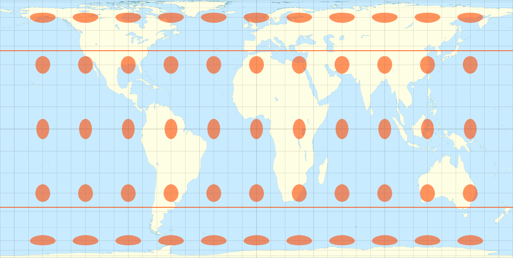
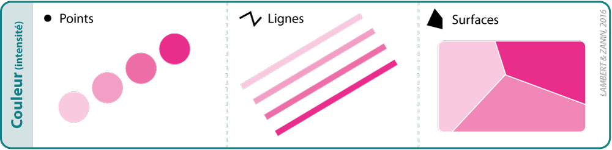
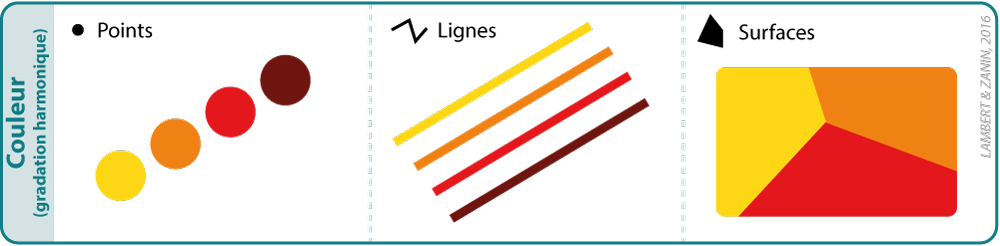
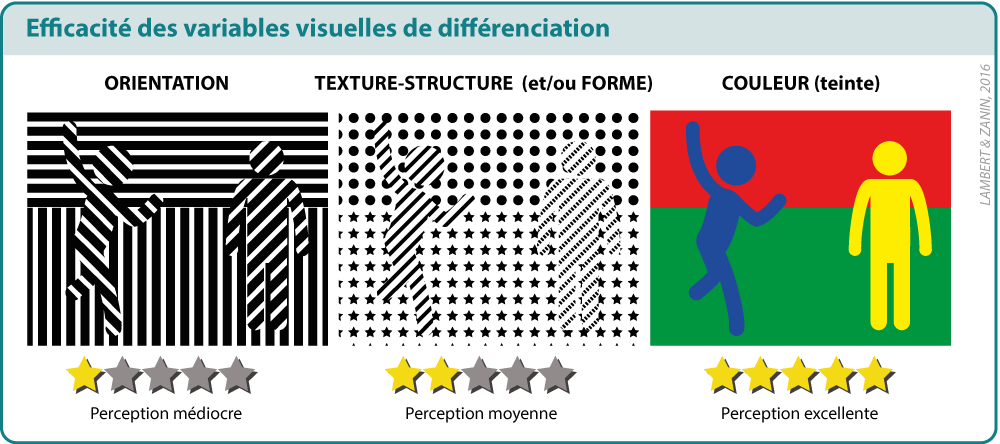
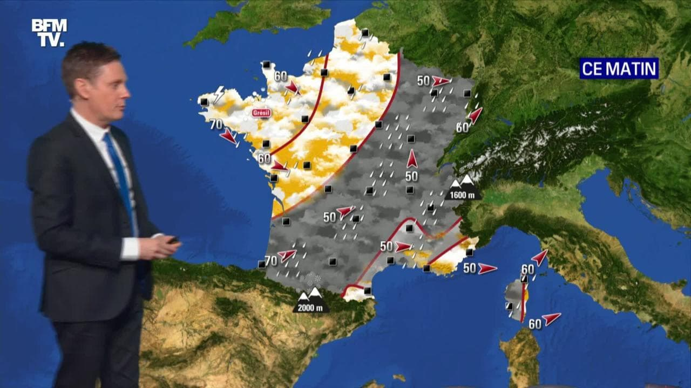
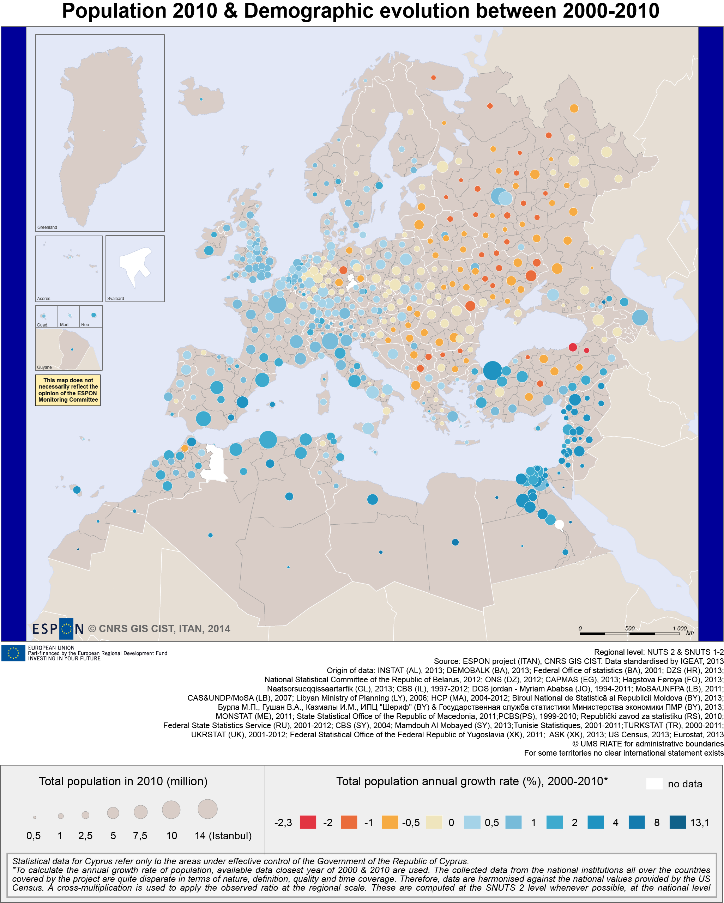
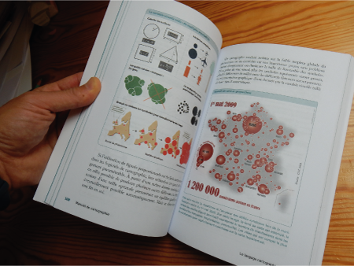

Cartographie thématique
Introduction et mise en application avec MAGRIT
MASTER Géomatique - Université du Sine Saloum El-hâdj ibrahima NIASS
Une représentation du réel…

Mais pas de la réalité !
Une carte est une représentation géométrique plane, simplifiée et conventionnelle de tout ou partie de la surface terrestre, et cela dans un rapport de similitude convenable qu’on appelle échelle.
Fernand Joly, 1976
Une carte est une image simplifiée et codifiée de l’espace géographique, qui représente ses caractèristiques et/ou son organisation. Elle résulte de l’acte créateur et des choix de son auteurs.
N. Lambert & C. Zanin, 2017
Cartographie
La cartographie est une discipline (composante de la géomatique) qui a pour objectif la construction de cartes. c’est à la fois une discipline scientifique, technique et artistique.
Une science
Les bases sont mathématiques (système de coordonnées de référence et projection). L’enjeu est la précision et la fiabilité. La représentation cartographique est régie par des règles de sémiologie graphique.

Une technique
Nécessite un vaste savoir faire opérationnel : acquisition de données, préparation et traitement de données, maîtrise de logiciels spécialisés…

Un art
Recherche d’esthétisme. Comme pour tout objet de communication, le graphisme d’une carte à un impact sur la transmission du message.

Le cartographe est l’individu qui maîtrise les méthodes, techniques et concepts de mise en page de l’information géographique.
La carte thématique
Carte représentant sur un fond repère topographique, hydrographique, chorographique ou géographique, des phénomènes localisables de toute nature, qualitatifs ou quantitatifs

La cartographie thématique est un outil d’analyse, d’aide à la décision et de communication largement utilisé pour représenter une ou plusieurs variables.
C’est un moyen très efficace d’exprimer des idées et de repérer des phénomènes qui ne le seraient pas (ou plus difficilement) par d’autres moyens.
Cest un document graphique basé sur la communication par les signes. Elle relève du langage visuel, sa construction doit suivre les règles de la sémiologie graphique.
Modéliser pour localiser
La planète Terre n’est pas une sphère, c’est à dire une forme géométrique parfaite… Elle est légèrement aplatie aux pôles et bosselée selon les continents. Son apparence sphérique lorsqu’on l’observe depuis l’espace masque les nombreuses petites irrégularités de sa surface.

Le géoïde terrestre
Toute mesure ayant besoin d’une référence, on modélise la forme de la Terre selon le modèle théorique du géoïde.

Un géoïde est une surface équipotentielle du champ de pesanteur coïncidant « au mieux » avec le niveau moyen des océans et qui se prolonge sous les continents.
La surface du géoïde équivaut au niveau d’altitude 0 à l’échelle mondiale. La notion d’altitude traduit donc la hauteur au-dessus du géoide.
Pour la France, il est calé sur un niveau zéro scellé dans le port de Marseille.
Formalisation mathématique du géoïde
Le géoïde est une surface diforme, à laquelle on ne saurait appliquer des relations mathématiques. Pour modéliser cette surface, on utilise une figure géométrique régulière : l’ellipsoïde.

Il s’agit d’un volume globalement sphérique présentant un aplatissement aux pôles.
L’ellipsoïde terrestre
L’ellipsoïde est la surface mathématique qui se rapproche le plus du géoïde. Elle sert de référence pour la construction des projections cartographiques. Positionner l’ellipsoïde en fonction du géoïde permet de construire un système géodésique.

Écart Ellipsoïde vs Géoïde

Les couleurs traduisent l’écart entre le géoïde et l’ellipsoïde. Elle ne dépasse pas 110 mètres.
Si la forme de la terre n’est pas régulière, elle se rapproche donc fortement d’un ellipsoïde.
Il est important de noter que l’altitude d’un point est calculé par rapport à son l’éloignement vertical à la surface du géoïde et non à celle de l’éllipsoïde de référence.
Les systèmes géodésiques
Un système géodésique sert de repère pour déterminer les coordonnées géographiques (ou géodésiques) d’un objet à la surface de la Terre. Ces coordonnées sont des valeurs angulaires, calculées par rapport à un parallèle (équateur) et un méridien de référence (Greenwich). Les coordonées d’un objet traduit deux dimensions : la latitude et la longitude.


Les coordonnées géographiques
Les coordonnées géographiques peuvent être exprimées en Degrés Décimaux (DD) ou en Degrés-Minutes-Secondes (DMS)

Projeter = déformer !
Une projection est un procédé mathématique permettant de passer de l’ellipsoïde à sa représentation sur une surface plane. Toutes les projections provoquent des déformations. Plus l’espace représenté est vaste, plus les altérations sont importantes.
L’indicatrice de Tissot permet d’apprécier la déformation engendrée par un système de projection.


Une forme géométrique (cercle ou ellipse) est utilisée pour représenter les altérations des surfaces et/ou des angles.
Projection conforme
Conserve les angles (formes) mais pas les surfaces (distances).

Ex : Projection Mercator
Gerardus Mercator (1569)
Cylindrique & conforme
Projection conforme vs réalité ?


Projection équivalente
Conserve les surfaces (distances) mais pas les angles (formes).

Ex : Projection Gall–Peters
James Gall et Arno Peters (1855)
Cylindrique & équivalente
Projection aphylactique
Ne conserve ni les formes, ni les surfaces. Compromis d’altération entre projection conforme et équivalente.

Ex : Projection Natural Earth
Tom Patterson (2011)
Pseudo-cylindrique & aphylactique
La généralisation
A. La généralisation d’un fond de carte répond à plusieurs objectifs :
- Pragmatique : améliorer la lisibilité de la carte en évitant les empâtements
- Scientifique : éliminer toute surcharge graphique (bruit) pouvant nuire au message de la carte
- Technique : diminuer le nombre de coordonnées stockées en mémoire
- Esthétique : dessiner un territoire selon un style graphique défini
B. La généralisation dépend de :
- l’échelle de la carte
- Choix humains
C. Le processus de généralisation se décompose en plusieurs opérations :
La selection consiste au choix des éléments des éléments à représenter. Ici, on élimine les îles (critère de surface) :
La schématisation structurale consiste en une simplification des tracés :

La schématisation conceptuelle est une simplification qui intègre des éléments d’interprétation (agrégations d’objets, changement de figuration, etc). On la retrouve beaucoup dans les cartes topographiques.
L’harmonisation est une opération d’homogénéisation générale du fond carte entre tous les éléments qui le composent.
Emprise, centrage et orientation
Le choix de l’emprise permet d’éviter les espaces vides sur la carte, d’exclure un élément, de maximiser la place de l’information à représenter…Cela revient à orienter la lecture de la carte.
Il n’y a pas de règle pour l’orientation et le centrage d’une projection, mais ce choix n’est pas anodin…


Sept variables visuelles…
Variable visuelle Taille
Source : N. Lambert & C. Zanin, Manuel de cartographie, 2017
Variable visuelle Valeur

= Couleur (intensité)

= Couleur (harmonique)

Source : N. Lambert & C. Zanin, Manuel de cartographie, 2017

Source : N. Lambert & C. Zanin, Manuel de cartographie, 2017
Variable visuelle Forme

Source : N. Lambert & C. Zanin, Manuel de cartographie, 2017
Variable visuelle Grain

Source : N. Lambert & C. Zanin, Manuel de cartographie, 2017
Variable visuelle Grain

Source : N. Lambert & C. Zanin, Manuel de cartographie, 2017
Variable visuelle Texture-structure

Source : N. Lambert & C. Zanin, Manuel de cartographie, 2017
… Aux propriétés différentes


Source : N. Lambert & C. Zanin, Manuel de cartographie, 2017
Des données aux variables visuelles


Preuve par l’exemple


Exemples
Exprimer la différenciation

Exemples :

Exprimer des quantités

Exemples :
Exprimer l’ordre
Exemples :

Exemples :


Choisir une discrétisation

Les différentes méthodes de discrétisation
La méthode de discrétisation par amplitudes égales ou intervalles égaux permet de créer des classes qui possèdent toutes la même étendue :

Avantages & inconvénients
- ✅ Facile à construire, facile à lire, conserve la forme de la distribution
- ❌ Optimum pour les distributions uniformes (rares) mais pas pour les distributions asymétriques
La méthode de discrétisation par effectifs égaux ou par quantiles permet de former des classes qui possèdent toutes le même nombre d’individus. La méthode Q6 basée sur les quartiles, permet d’isoler les valeurs extrêmes :
Avantages & inconvénients
- ✅ Transmet une information maximale
- ✅ Privilégie les rangs plus que les valeurs
- ❌ Transforme complètement la distribution
Cette méthode de discrétisation permet de former des classes en fonction de la valeur de l’écart-type et de la moyenne. Ce mode de discrétisation ne permet pas de choisir directement un nombre de classes mais permet de choisir la portion d’écart-type qui correspond à la taille d’une classe ainsi que le rôle de la moyenne (utilisée comme borne de classe ou comme centre de classe) :
Avantages & inconvénients
- ✅ Fait référence aux caractéristiques de la distribution (moyenne, écarte-type)
- ✅ Permet la comparaison dans une unité commune
- ❌ Convient mal aux distributions asymétriques
La méthode de discrétisation par progression géométrique ou arithmétique permet de créer des classes avec une amplitude de plus en plus importante (ou l’inverse) :
Avantages & inconvénients
- ✅ Convient aux distributions asymétriques produites par exemple par des processus multiplicatifs
La méthode de discrétisation des seuils naturels (ou Jenks) repose sur un repose sur algorithme qui permet de créer une discrétisation qui optimise le regroupement des valeurs similaires et à maximiser les différences entre les classes.
Les entités sont réparties en classes dont les limites sont définies aux endroits où se trouvent de grandes différences dans les valeurs de données. Pour cette raison, cette méthode de discrétisation peut aussi être appliquée manuellement dans le cas où des seuils sont clairement visibles à l’oeil nu lorsque l’on observe la forme de la distribution :

Avantages & inconvénients
- ❌ Les seuils naturels sont des classifications propres aux données et ne permettent pas de comparer plusieurs cartes.
Impact d’une discrétisation

Sources & ressources


Lambert, N., Zanin, C. (2016). Manuel de cartographie: Principes, méthodes, applications. Armand Colin.
Quels outils pour faire une carte ?

Magrit est une des nombreuses solutions logicielles qui permet de réaliser des cartographies thématiques. C’est une solution idéale pour le néophyte pour rentrer dans cet univers méthodologique : en quelques clics, il est possible de réaliser une représentation cartographique correctement mise en page.
Ce n’est en revanche pas un outil destiné à de la manipulation de données spatiales (sélections par attribut, manipulation de rasters, géotraitements, etc.). Pour cet usage et dans un univers clic-bouton, on privilégiera l’usage des Systèmes d’Information Géographique, comme QGIS.
Pour les utilisateur·rices qui souhaitent intégrer leur représentation cartographique au sein d’une chaîne de traitement, de l’import à la cartographie et qui sont sensibles à la reproductibilité de leur analyse, on privilégiera les solutions de programmation, comme celles proposées par le logiciel R ou Python et où les écosystèmes qui permettent de gérer de l’information spatiale sont particulièrement développés. La librairie mapsf rend possible des types de représentations similaires à celles proposées par Magrit dans un univers R.
Pour celles et ceux sensibles à la cartographie interactive et au portage sur le Web de leurs représentations, nous les invitons à se rapprocher des technologies JavaScript. De nombreuses librairies basées sur ce langage de programmation sont accessibles et permettent la réalisation de cartographies interactives, comme OpenLayers, mapbox ou encore Leaflet. bertin.js est d’ailleurs une librairie qui permet la réalisation de cartes thématiques pour le Web.
Il est aussi important de rappeler que ces solutions techniques ne sont pas indépendantes les unes des autres : elles s’alimentent mutuellement : implémentation de chaines de traitement Python dans QGIS, adaptation des technologies leaflet dans les logiciels de programmation, etc.
Installer Magrit avec Docker (1)

- Compatibilité : Tous les OS qui supportent Docker (Windows, Mac, Linux, etc.)
- Prérequis : Docker installé sur votre machine
Installer Magrit avec Docker (3)
En utilisant le GUI Docker Desktop (option 2) :
Chercher “Magrit” dans la barre de recherche, sélectionner l’image magrit/magrit et cliquer sur Pull.

Dans le menu Images, cliquer sur le bouton ▶️ de l’image magrit/magrit.
 Renseigner le port sur lequel l’application doit être exposée (par exemple 9999).
Renseigner le port sur lequel l’application doit être exposée (par exemple 9999).
Accéder Magrit en local
😎 Simplement en ouvrant votre navigateur à l’adresse http://localhost:9999/

Il est ensuite possible de stopper ou de redémarrer l’application depuis le menu Containers de Docker Desktop.

Ou en ligne de commande :
docker stop magrit
Diapositives libres (CC BY 4.0)
En ligne : https://huguespecout.github.io/Intro_carto_thematique/
Code source : https://github.com/HuguesPecout/Intro_carto_thematique

Comment faire ?
1. Résumer la série statistique
→ Regarder les paramètres de position ou valeurs centrales (moyenne, médiane, mode)
Ces paramètres indiquent la valeur “typique” autour de laquelle les observations sont réparties.
→ Regarder les paramètres de dispersion (écart-type, intervalle interquartile…)
Ces paramètres mesurent de l’écart des valeurs d’une distribution à une valeur centrale.
2. Analyser la forme de la distribution
→ Construire un histogramme, une boîte à moustaches, un essaim d’abeilles (beeswarm)…
Histogramme
Boîte de moustache
Essaim d’abeilles
3. Déterminer les intervalles des classes
Il existe de nombreuses méthodes plus ou moins adaptées aux différentes formes de discrétisation….
Il n’y a pas UNE discrétisation optimale !
Il y a une démarche cohérente par rapport à un objectif donné et une distribution donnée.